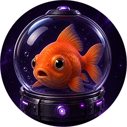

Sécurité
Réinitialisation
Nouveau mot de passe
Choisis un nouveau mot de passe pour remettre ton compte en orbite. Les poissons rouges peuvent souffler.

Même les poissons rouges oublient parfois leur mot de passe.
Heureusement, ils retrouvent toujours leur orbite.